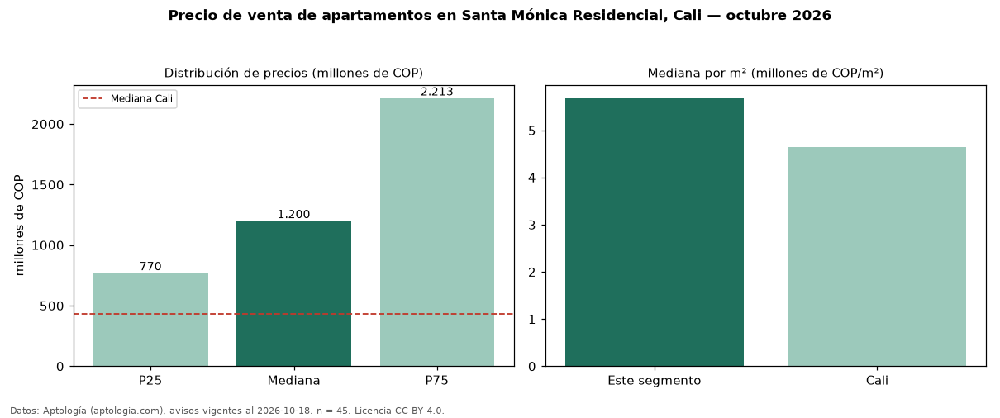

Precio de venta de apartamentos en Santa Mónica Residencial, Cali — octubre 2026
Con 45 avisos vigentes, el precio mediano de apartamentos en venta en Santa Mónica Residencial, Cali es COP 1,20 mil millones. Eso es 179 % por encima de la mediana de Cali para apartamentos (COP 430 millones). Por metro cuadrado, la mediana es COP 5,68 millones/m² (n = 38 avisos con área), 22 % por encima de Cali (COP 4,65 millones/m²). Por precio mediano es el puesto 3 de 66 barrios de Cali con al menos 30 avisos de apartamentos en venta (COP): entre las más caras. La mitad central de los avisos va de COP 770 millones a COP 2,21 mil millones (razón 2,9), una dispersión alta. El área mediana anunciada es 163 m². El segmento con más oferta es el de 3 o más habitaciones (42 avisos, mediana COP 1,15 mil millones). La administración mediana declarada es COP 1,24 millones al mes (n = 25). Datos: Aptología (aptologia.com), CC BY 4.0 — https://www.aptologia.com/venta/cali/santa-monica-residencial. Archivos: PDF, CSV con las cifras y gráfica PNG.

| Avisos únicos | 45 |
|---|---|
| Percentil 25 | COP 770.000.000 |
| Mediana | COP 1.200.000.000 |
| Percentil 75 | COP 2.213.400.000 |
| Mediana por m² | COP 5.682.485 |
Fuente: avisos vigentes de portales inmobiliarios recopilados por Aptología, deduplicados (mínimo 30 avisos únicos por celda). Precios pedidos, no cerrados. Fecha: 2026-10-18.